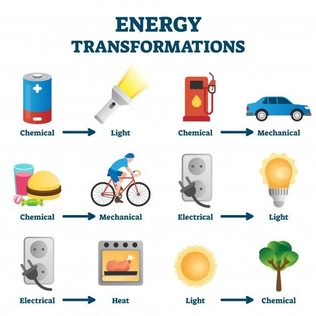
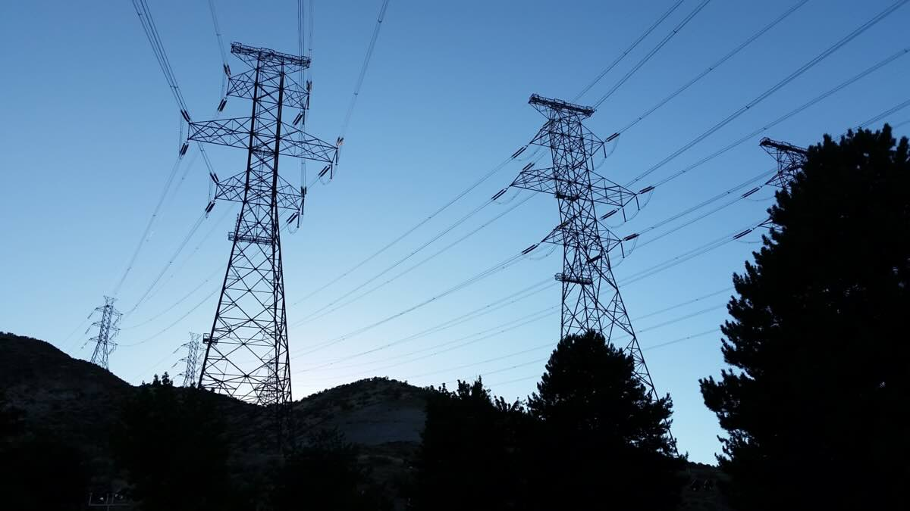
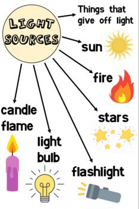
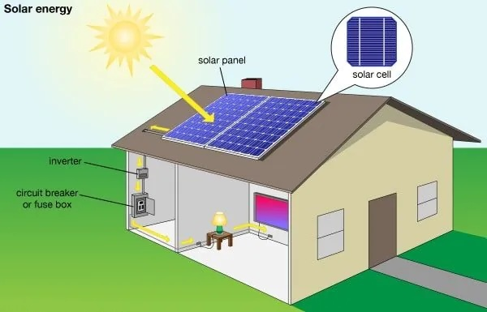
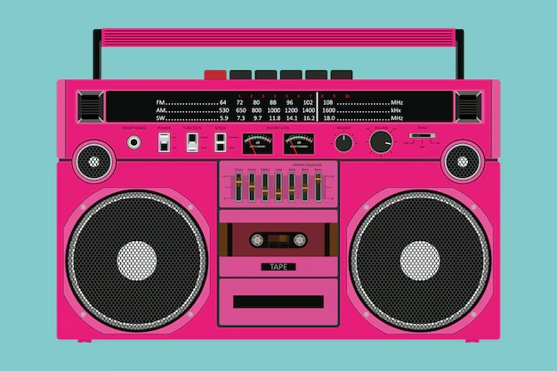
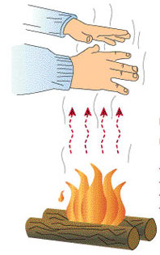
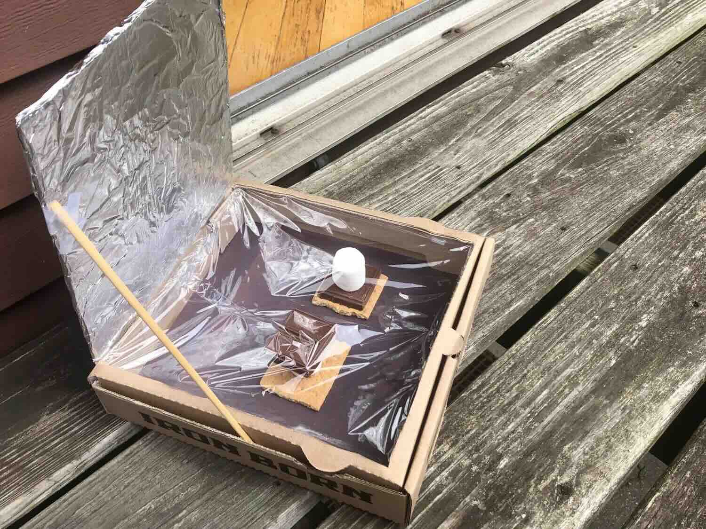

Energy Transfer: Making Things Happen!
What is Energy?
Energy is the ability to do work, or more simply: energy makes things happen. Think about your day - you use energy to ride your bike, play video games, bake cookies, and get to school. Even sleeping requires energy!
Energy is All Around Us
We need energy for our homes to power lights, refrigerators, air conditioners, and computers. We use energy when we drive cars or pedal a bike. Our devices run on energy stored in batteries.

Energy transformations happen all around us, from electrical appliances to transportation
Understanding Energy Transfer
Energy transfer takes place when energy moves from one place to another. This can happen in two main ways:
- Energy moves from one object to another - like when your foot kicks a soccer ball
- Energy changes from one form to another - like when a battery powers a toy

Power lines transfer electrical energy over long distances from power plants to our homes
Important Vocabulary
- Energy: The ability to do work (makes things happen!)
- Energy Transfer: Energy being moved from place to place
- Generator: Changes energy from one form to another
- Batteries: Store energy and change it from one form to another
- Solar Cell: Converts energy of sunlight into electrical energy
- Motion Energy: The energy something has due to movement
Three Main Forms of Energy Transfer
1. Energy Can Be Transferred as Light
Light energy is the only form of energy we can actually see with our eyes. The sun is our biggest source of light energy, but not the only one!

Different sources of light energy: natural sunlight, electric light bulbs, and flames
Light Energy Examples:
- The sun provides light energy that helps plants grow through photosynthesis
- Light bulbs convert electrical energy into light energy
- Candles convert chemical energy (from wax) into light energy
- Some living things like fireflies produce their own light
- Solar cells capture light energy and convert it to electrical energy

Solar panels convert light energy from the sun into electrical energy we can use
Did you know? Plants convert light energy from the sun into chemical energy stored in food. When animals eat plants, they get that energy. This is why the sun is considered the ultimate energy source for most life on Earth!
2. Energy Can Be Transferred as Sound
Sound energy travels in waves from a source to a receiver. These waves cause vibrations that our ears can detect.
Sound energy travels in waves and creates vibrations that we can hear and sometimes feel
Sound Energy Examples:
- When you speak, you create sound waves that travel through the air to someone's ears
- Musical instruments create sound waves when played
- Animals use sound energy to communicate with each other
- Very loud sounds can create vibrations you can actually feel in your body
- A radio converts electrical energy into sound energy

A tape recorder or music player converts electrical energy into sound energy we can hear
Mini-Activity: Feel the Sound!
Place your fingers gently on your throat while you hum. Can you feel the vibrations? That's sound energy you can feel! If you have a speaker playing music, touch it lightly - you might feel it vibrating too.
3. Energy Can Be Transferred as Heat
Heat energy always moves from warmer objects to cooler objects. This is called heat transfer.

Heat energy transfers from the warm bonfire to cooler objects nearby, including your hands
Heat Energy Examples:
- A campfire transfers heat to your marshmallow, making it soft and gooey
- The sun warms the Earth through heat transfer
- A toaster converts electrical energy into heat energy to toast bread
- Your body transfers heat to a cold drink when you hold it
- Heated wires can transfer enough heat to ignite paper
Heat always naturally flows from hot to cold - never the other way around! This is why ice cubes cool your drink (heat flows from your drink to the ice) and why your hot cocoa eventually cools down to room temperature.
Energy Conversion: Changing from One Form to Another
Batteries: Chemical to Electrical Energy
Batteries store chemical energy and convert it to electrical energy when connected in a circuit. The electrical energy can then flow through wires to power devices.
Generators: Motion to Electrical Energy
Generators don't actually "generate" energy (that would be impossible!). Instead, they convert one form of energy into another. Most generators convert motion energy into electrical energy.
How a Bicycle Generator Works:
- A person pedals the bike (using their chemical energy from food)
- The pedaling creates motion energy in the spinning wheel
- The wheel is connected to a generator
- The generator converts the motion energy into electrical energy
- The electrical energy flows through wires to power devices like lights
Solar Cells: Light to Electrical Energy
Solar cells (also called photovoltaic cells) capture light energy from the sun and convert it directly into electrical energy. This is why they're used in calculators, some outdoor lights, and large solar panels on houses.
Electric Devices: Electrical to Other Forms
Most household appliances convert electrical energy into other useful forms:
- Toasters, ovens, heaters: Electrical → Heat energy
- Light bulbs: Electrical → Light energy (and some heat)
- Speakers, radios: Electrical → Sound energy
- Electric motors: Electrical → Motion energy
Energy in Natural Systems
Plants and Energy
Plants are amazing energy converters! Through photosynthesis, they convert:
- Light energy from the sun
- Into chemical energy stored in sugar molecules
This chemical energy becomes the foundation of most food chains on Earth.
Food and Energy
When you eat food, your body:
- Breaks down the chemical energy in food
- Converts it into forms your body can use
- Uses it for movement, growth, thinking, and maintaining body temperature
Energy Production and Power Plants
Power plants don't actually "produce" energy - they convert it from one form to another. Here are some common methods:
- Hydroelectric plants: Convert the motion energy of flowing water into electrical energy
- Coal/natural gas plants: Convert chemical energy in fossil fuels into heat, which produces steam that spins turbines to generate electrical energy
- Wind farms: Convert the motion energy of wind into electrical energy
- Solar farms: Convert light energy from the sun directly into electrical energy
Design Challenge: Solar-Powered S'mores Maker
You can create a simple solar cooker that uses the sun's energy to make s'mores! You would need:
- A cardboard box
- Aluminum foil
- Plastic wrap
- Black paper
- S'mores ingredients (graham crackers, chocolate, marshmallows)
The foil reflects light energy into the box, the black paper absorbs it as heat, and the plastic wrap traps the heat inside - allowing you to melt your s'mores using only the sun's energy!

A solar cooker uses the sun's light energy, converting it to heat energy to make delicious s'mores
Energy Efficiency and Conservation
When energy is converted from one form to another, some energy is always lost, usually as heat. This is why energy conversion devices are never 100% efficient.
Efficiency Examples:
- Incandescent light bulbs convert only about 5% of electricity to light (95% becomes heat)
- LED bulbs convert about 30-50% of electricity to light (more efficient)
- Car engines convert only about 25% of fuel energy into motion
Complex Energy Transformation Chains
Many devices involve multiple energy transformations in sequence:
Example: Playing Music on a Portable Speaker
- Chemical energy (in battery)
- → Electrical energy (flowing through circuits)
- → Motion energy (in speaker cone vibrations)
- → Sound energy (waves traveling through air)
Check Your Understanding!
- What is the definition of energy?
- Name the three main ways energy can be transferred.
- How does a battery convert energy?
- How does a solar cell convert energy?
- What energy transformation happens when you kick a soccer ball?
- Why is the term "generator" technically not accurate?
- Name three household devices and identify what energy conversions they perform.
- How do plants use energy from the sun?
- In which direction does heat energy naturally flow?
- What is motion energy?
Applying What You've Learned: Energy Transfer Challenges
Challenge 1: Energy Detective
Choose an electrical device in your home. Try to identify:
- What form of energy goes into the device?
- What form(s) of energy come out of the device?
- Are there any "wasted" forms of energy produced?
Challenge 2: Energy Chain Tracker
Trace the energy transformations that occur from the sun to a plant to you running a race:
- Sun → Plant → You → Movement
- What energy transformations happen at each step?
Challenge 3: Design an Energy Conversion Device
Imagine you need to design a hand-cranked flashlight. What energy conversions would take place? How could you make it more efficient?
Summary: Key Points About Energy Transfer
- Energy is the ability to do work or make things happen
- Energy cannot be created or destroyed, only transferred or converted
- The three main forms of energy transfer are through light, sound, and heat
- Energy conversions are never 100% efficient - some energy is always "lost" (usually as heat)
- Everyday devices convert energy from one form to another to perform useful tasks
- Energy always flows from high concentration to low concentration (like heat moving from hot to cold)
- The sun is the ultimate source of most energy on Earth